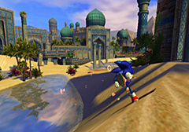

「クリエイターズ インタビュー」 第13回目は、
『ソニックと秘密のリング』アートディレクターの三浦 義貴と、リードインターフェイスデザイナーの日野 太郎を紹介！
プロフィール：
三浦 義貴（みうら よしたか）
セガ/第一ＧＥ研究開発部/デザインセクション
1997年セガ入社『ソニックアドベンチャー』背景担当
1999年アメリカへ赴任『ソニックアドベンチャー2』背景担当
『ソニックアドベンチャー2バトル』『ソニックヒーローズ』主に背景担当
2004年帰国後『きみのためなら死ねる』シニアアーティスト
『ソニックと秘密のリング』では初のアートディレクターを務める
日野 太郎（ひの たろう）
セガ/第一ＧＥ研究開発部/デザインセクション
『スペースチャンネル5』背景CGムービー、エフェクト担当
『スペースチャンネル5 パート2』インターフェイス、CGムービー担当
『ASTRO BOY 鉄腕アトム』インターフェイス担当
『きみのためなら死ねる』メインビジュアル、インターフェイス、その他諸々
『赤ちゃんはどこからくるの？』メインビジュアル、インターフェイス担当、その他諸々
今回は、2007年3月15日に発売しました『ソニックと秘密のリング』（以下、『ひみリン』アートディレクターの
三浦 義貴さんと、リードインターフェイスデザイナーの日野 太郎さんにお話しを伺いたいと思います。
まず、それぞれどのようなお仕事を担当されていたか、ご説明いただけますでしょうか？
三浦：
今回はアートディレクターという大役を仰せつかりました。
仕事内容的には、みんなの作ったモノに文句をつける仕事ですね（笑）。
デザイナーは今回結構たくさんいたので大変でした。
パスの上を走る実験データを作ったり、表現の実験をしたり、最初のお膳立て（大人数で制作する前のテスト制作作業）はしましたが、実作業が始まってからはクオリティー管理が中心でしたね。
実作業のほうでは、ロストプロローグと呼ばれるチュートリアル面を作ったり、内作・外注のマップ全般の監修、パッケージイメージビジュアルの監修をしながら、最後の修正作業までレタッチしたり、色味の調整したり、足りない素材を足したり、ポスターの素材作ったり、レンダリングしたり…
すげ～～～細かいところまで作業していますよ。
日野：
リードインターフェイスデザイナーとしてインターフェイス周りを担当していました。
タイトル画面や、選択画面、ロゴとかですね。あとは、パブリシティー周りのデザイン作業とか。あ、今三浦さんが着ているひみリンパーカーや、Tシャツのデザインもしましたよ。炎のデザインも僕です。
サントラのジャケットデザイン、ブックレット、ディスクジャケットデザインなども一通り手掛けています。
三浦さん、日野さんはどういう経緯で『ソニックと秘密のリング』を手掛けることになったのでしょうか？
三浦：
ニンテンドーDSソフト『きみのためなら死ねる』（以下『きみしね』）の制作が2004年12月に終わって、次はまたこのメンバーで『赤ちゃんはどこからくるの？』（以下『あかどこ』）をやろう！というところで、
「三浦はソニックを作れ」
と首根っこをつかまれまして（笑）。
次は、僕がソニックを作らなきゃという雰囲気がありまして…。
スタジオUSAから日本へ帰ってきたメンバーの中で、デザイナーは僕だけだったんですよ。
で、その後、ソニックの新プロジェクトに入って、新しいソニック作品の試作を色々と模索しつつ行なっていました。
そんなこんなで黙々と過ごしていると、任天堂から新しいハードが出るという話が発表されました。
「これで新しいソニックを！」ということで、また新しい試行錯誤が始まりました。
ビジュアル的にも次世代機にはかなわないのでどうしようかなというのはありましたね。
2006年E3でお披露目するということは決まっていたので、それに向けて制作していきました。
アラビアでいくってことになって、それならファーストステージは砂漠だろう！ということで作っていきました。
日野：
僕は『きみしね』、『あかどこ』と続けて制作しました。で、『あかどこ』が終わって次どうするって話になって。任天堂の新しいハード、Wiiでやるのがあるよと言われ、「じゃあ是非それを！」ということで、2006年頭くらいから参加しました。
僕、ファミコン時代からの任天堂ファンなので（笑）。
なるほど。そして、三浦さんにとっては今回初のアートディレクター作品！戸惑いや予想していなかった事などもあったと思うのですが、今振り返ってみて、いかがだったでしょうか？
三浦：
いいデザイナーが集まってくれたので、すごく助けられましたね！
僕一人で何か出来たかというと、多分むりだったので。無我夢中でやっているうちに終わったような感じでした。
ソニックでは、初めての「Wii」作品！
新世代ハードを選んだことでのご苦労も多かったと思うのですが、デザインチーム側から見て、開発のほうはいかがだったでしょうか？
三浦：
同時期に同じ部署内で次世代機対応の『SONIC THE HEDGEHOG』を作っていたので、差別化を図らなきゃというのがありましたね。
最初のほうから意識してやっていました。
ロゴとかも、炎をつけるのは内部的には冒険だったんですよ。
日野：
ロゴは苦労しましたねー。
今までのシリーズは大体パターンがわかりますよね。
「ソニック」というほぼ固定されているロゴがあって、その後ろや下に、「（ソニック）何々～」と続く。
今回の『ソニックと秘密のリング』では新しいチャレンジをしたかったので、さまざまな新しいデザインを制作して、提案していきました。でも、ほぼダメというか、“変えすぎ”と言われました。
また変えて、また見せて、みたいな。ずっとそれの繰り返しでした。途中からは考えたやつ全部のロゴに炎を付けていましたね。
そして、それ（炎）を付けようという事が決定事項になってからは、炎の調整作業。炎の高さ、形、見せ方を細部に渡り調整していきました。
ソニックの胸から炎が出るという設定はプロジェクトの最初のほうからあったので、僕のほうでも“炎“（の要素）が外れることはないだろうと思っていて。
かなりこだわって、初期のデザイン段階から盛り込んでいたんです。